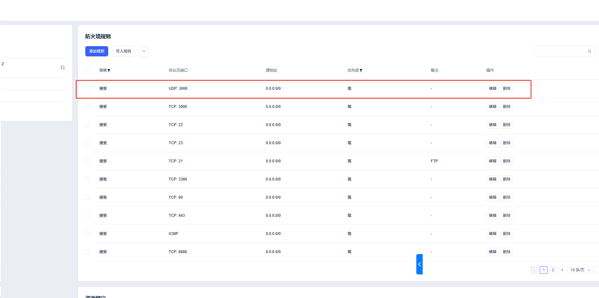

Deployment topology
公网 Provider 节点已投入服务
Windows 用户端与 V100 提供端已完成端到端验收
DEPLOYMENT PASS
端到端拓扑与已验证路径
Consumer · Windows
windows-local-consumer
14.154.222.55
Local API · 127.0.0.1:18792Registry connected · Peer count 2
⇄TCP/3000 API
UDP/3000 ICE
E2EE envelopes
UDP/3000 ICE
E2EE envelopes
Provider · Ubuntu
V100 32GB Provider
117.50.189.73:3000
Registry + Peer proxy + Video APIaccepting_orders=true
公网服务健康状态
Gateway / Registry● OK
GET /health · TCP/3000Qwen Provider● ONLINE
capacity 1/1 · latency 1 msVideo API● READY
pipeline_loaded=trueGPU Runtime
V100 32 GiB
Tesla V100-SXM2-32GB
CUDA available · sm_70
Driver 580.159.04
LLM Runtime
Qwen3-14B
NF4 4-bit · Transformers
Context 4096 · loopback only
Real conversation passed
Video Runtime
Wan2.1 1.3B
Diffusers 0.35.2
CUDA pipeline loaded
Real MP4 generated
Server fingerprint
Operating systemUbuntu 22.04.5 LTS
PyTorch2.7.1+cu126
Compute capability7.0
Private runtimes
Qwen API127.0.0.1:8080
Peer control127.0.0.1:8791
Plaintext loggingfalse
Acceptance summary
Public healthPASS
Strict P2PPASS
pytest / Ruff77 PASS / CLEAN
Private LLM task receipt
Windows 本地调用服务器 Qwen3-14B
签名加密任务信封经公网 Provider 转发至回环模型服务
REAL RESPONSE VERIFIED
✓ task signed → ciphertext over public provider → decrypt on compute node → Qwen inference on CUDA → ✓ response signature verified
Windows Consumer 127.0.0.1:18792 → 117.50.189.73:3000/peer → Qwen runtime 127.0.0.1:8080
Windows Consumer 127.0.0.1:18792 → 117.50.189.73:3000/peer → Qwen runtime 127.0.0.1:8080
Verified task receipt
task_2a3302a61e4143ef96837e5f76b88c06
| State | SUCCEEDED |
| Service | qwen3-14b |
| Transport | peer_http_direct |
| Relay used | false |
| Duration | 1,882 ms |
| Input tokens | 33 |
| Output tokens | 18 |
| Settlement | 0.001 DEV |
Runtime attestation
CUDA TRUEV100 32GBNF4 4-BITNO BODY LOGS
Model path: /model/ModelScope/Qwen/Qwen3-14B
Video generation job inspector
Windows 本地请求 → V100 服务器生成 MP4
真实 Wan2.1 推理、下载与文件完整性校验在同一证据链中完成
OUTPUT VERIFIED
▶
Generation job
vid_943f641617fa4973bce9bf7491db4b4e
● state=succeeded · output downloaded to Windows
| Model | Wan2.1-T2V-1.3B |
| Resolution | 480 × 272 |
| Frames / FPS | 33 / 8 |
| Duration | 4.125 s |
| Inference steps | 20 |
| Seed | 73 |
| GPU elapsed | 47.693 s |
| Output bytes | 40,536 |
PIPELINE LOADEDCUDA TRUEV100 sm_70
End-to-end execution evidence
1 · API acceptedPOST /video/v1/videos/generations
authenticated public endpoint
authenticated public endpoint
2 · CUDA inferenceWan Diffusers pipeline
20 steps · seed 73
20 steps · seed 73
3 · MP4 fetched/content → Windows workspace
40,536 bytes
40,536 bytes
4 · Integrity matchedlocal file hash == server output hash
state=succeeded
state=succeeded
SHA-256 VERIFIED261544fc28676c564bad17fea635c851fd9ee91795e6d4053ef375e6aa4ba62f
Strict NAT traversal audit
公网 ICE/UDP 直连与真实模型响应
不允许 TURN/relay；双方公网候选、提名候选对和载荷传输全部留证
DIRECT UDP NOMINATED
Windows Consumer candidate
14.154.222.55:60707
related address 10.10.10.175:60707
offer candidate exchanged through signed registry signaling
nominated provider endpoint: 117.50.189.73:3000 (srflx)
nominated provider endpoint: 117.50.189.73:3000 (srflx)
V100 Provider candidate
117.50.189.73:3000
related address 10.60.24.42:3000 · fixed bind port
answer candidate exchanged through signed registry signaling
observed Consumer mapping: 14.154.222.55:14253 (prflx)
observed Consumer mapping: 14.154.222.55:14253 (prflx)
Nominated candidate pair · Consumer view
Windows Consumer
10.10.10.175:60707 · hostICE/UDP DIRECT
987 B → 952 B
987 B → 952 B
V100 Provider
117.50.189.73:3000 · srflx✓ both public candidates
✓ nominated pair
✓ distinct egress
✓ relay_used=false
✓ signed E2EE task
REAL QWEN RESPONSE “严格 P2P 最终验收通过” · 948 ms · transport=ice_udp_direct · Task task_90dd301a0b26488a9b52913e53bb20f1
CONSUMER TRANSPORT EVIDENCE{ transport: "ice_udp_direct", relay_used: false }
local = 10.10.10.175:60707 / host
remote = 117.50.189.73:3000 / srflx
path_kind = server_reflexive
local = 10.10.10.175:60707 / host
remote = 117.50.189.73:3000 / srflx
path_kind = server_reflexive
PROVIDER TRANSPORT EVIDENCE{ transport: "ice_udp_direct", relay_used: false }
local = 10.60.24.42:3000 / host
remote = 14.154.222.55:14253 / prflx
path_kind = peer_reflexive
local = 10.60.24.42:3000 / host
remote = 14.154.222.55:14253 / prflx
path_kind = peer_reflexive
Cloud perimeter evidence
UDP/3000 入站规则已生效
规则截图与成功的严格 ICE/UDP 订单交叉验证
RULE EFFECTIVE

Effective inbound rule
UDP : 3000
ACCEPT · source 0.0.0.0/0 · high priority
TCP services retained
TCP/3000ACCEPT
Public healthHTTP 200
Runtime proof after rule change
- Provider STUN mapping 117.50.189.73:3000
- ICE candidate pair nominated
- 987-byte encrypted request delivered
- 952-byte encrypted response returned
- Real Qwen response verified in 948 ms
- relay_used=false